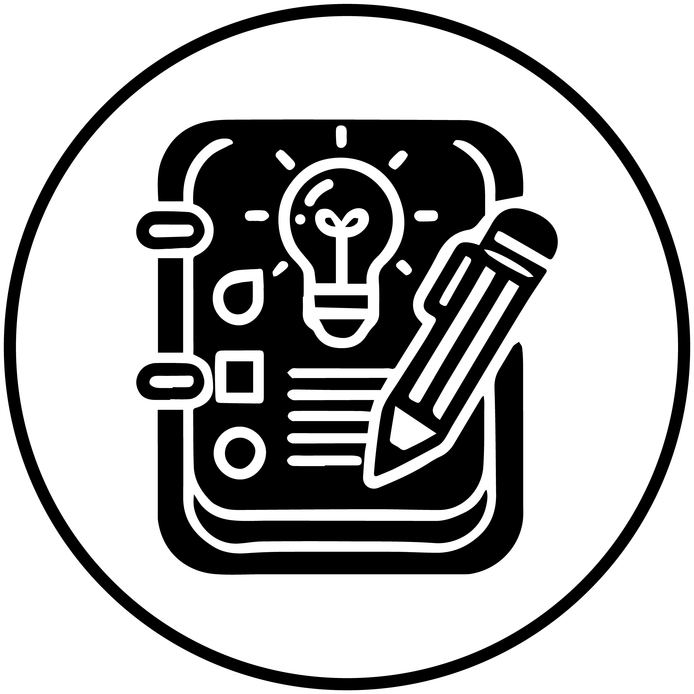
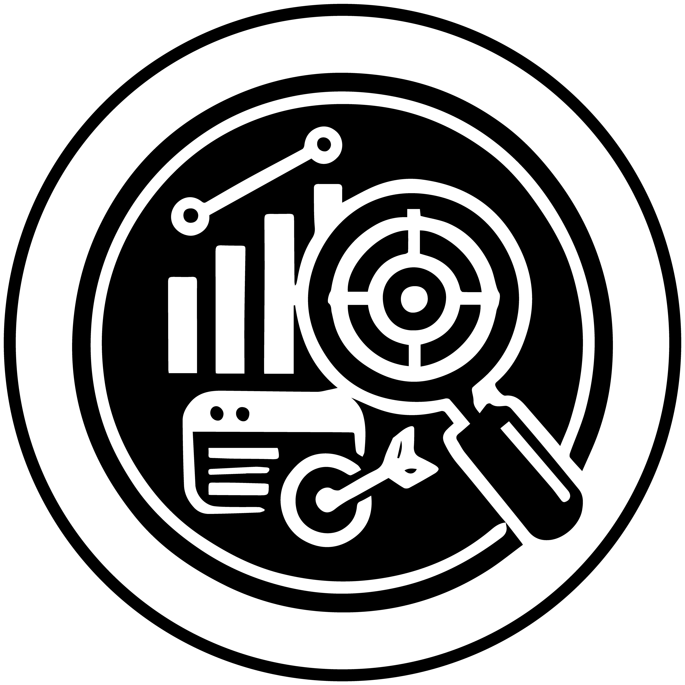
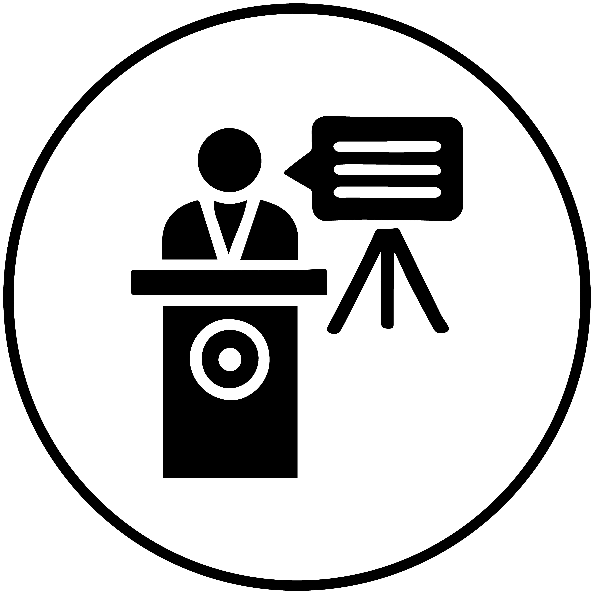
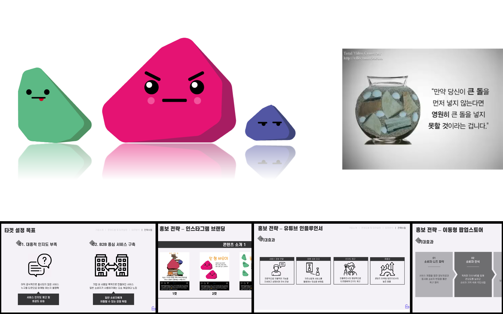

Contribution : Planning 25%, Production 5%, PT 50% (n=5)
Role : Analysis and target identification, production feedback
ㅤㅤㅤPresentation(PT), marketing strategy proposal
Skills Gained Through the Project :

Creative content planning skills

Analytical and marketing strategy formulation skills

Effective Presentation Skills

In response to the problem presented by the CEO of the startup 'Reverse Mountain', we proposed a marketing plan for transitioning the scheduling system 'Time Collabo' to B2C. Using 3C and SWOT analysis techniques, we thoroughly analyzed the service, competing services, customers, and external situations.
From this, we identified 'clean and intuitive design' and 'AI schedule recommendation system' as differentiating factors, and selected the 10s and 20s age groups with a self-development lifestyle as our target market through market segmentation. We chose Instagram, Everytime banners, YouTube, and mobile pop-up stores in university areas as promotional channels frequently used by this target group.
We developed an IMC strategy to enhance consumer awareness by delivering the message of 'the necessity of schedule management' using the same 'Stone' character across various promotional channels.